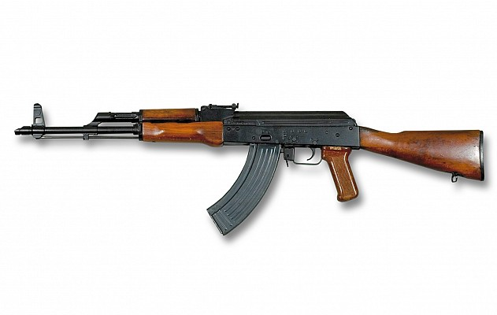

El AKM (en ruso: Автомат Калашникова модернизированный, Avtomat Kalashnikova Modernizirovannyj),
es un fusil de asalto creado como sucesor del AK-47 en 1959.
Es el primer fusil de asalto que se utilizó ampliamente en el mundo. Es rentable y fiable, y es uno de los más baratos de fabricar,
requiere un mantenimiento mínimo e infrecuente para funcionar correctamente, puede disparar aún mojado, oxidado o muy sucio, y tiene cartuchos potentes, aunque menos que el cartucho 7,62 x 51 OTAN, si bien también el retroceso es más controlable en modo automático.
Debido a sus características anteriores (y a que la URSS lo distribuyó por una gran parte del mundo), es ampliamente utilizado en muchos países y ha sufrido muy pocas modificaciones. Este fusil tiene la fama de ser común entre terroristas,
insurrectos y guerrilleros, porque les es fácil conseguirlo y tiene bajos costos. Entre originales, versiones, variantes y copias se han fabricado unos 60 millones de estos fusiles en todo el mundo y sigue siendo el más común con gran diferencia en el planeta.

Historia
En 1943 el ruso Mikhaíl T. Kalashnikov creó un fusil de asalto tanto como de guerra para utilizar el calibre 7,62 x 39 mm, pero su prototipo no fue elegido para servir al ejército ruso.
Así que tuvo que rediseñarlo adquiriendo conocimientos del estudio de unos fusiles alemanes Stg-44 capturados en la guerra, así como de otros prototipos de otros diseñadores rusos hasta llegar a las pruebas de 1947.
En 1947 creó el AK-47 (Avtomat Kalashnikova 1947 goda, en ruso). Entra en servicio militar en 1949, pero su uso fue mantenido en secreto por la Unión Soviética hasta 1956, cuando empezaron distribuirlo a todas las tropas rusas
En 1959 se fabrica una nueva versión del AK-47, el AKM (Avtomat Kalashnikova Modernizirovannyj).
Éste, a diferencia de su antecesor está hecho con partes más delgadas, algunas de metal estampado y otras de madera laminada, y usa cargadores de aluminio y plástico para abaratar y acelerar su producción. El AKM es un kilogramo más ligero que el AK-47
Boletín informativo
Suscríbete a nuestros boletines ahora y mantente al
día con nuevas colecciones y ofertas exclusivas.